This chapter introduces methods to compute distances between vertices (11.1) and faces (11.2) of a polygonal complex. Although the two concepts are very similar to each other, they will be treated in different sections, to make the explanations more readable and do not let the examples become too long.
In section 11.1, distances between vertices in a polygonal complex are defined. A definition for distances between faces can be found in section 11.2.
Most of the examples are platonic solids. They are already sufficiently complex to illustrate the methods, while remaining conceptually simple to make it easy to follow manipulations on them.
This section contains the methods to compute distances between vertices in a polygonal complex 2.1. It also contains methods building on the distance calculation, for example to construct neighbourhoods of vertices (compare 11.3).
‣ DistanceOfVertices( polygonalComplex, vertex1, vertex2 ) | ( operation ) |
‣ DistanceOfVerticesNC( polygonalComplex, vertex1, vertex2 ) | ( operation ) |
Returns: a non-negative integer, or -1.
This method computes the distance of two vertices in a polygonal complex (2.1) by determining the length of a minimal vertex-edge-path (8.1) between the given two vertices (the length is the number of edges).
If there does not exist any vertex-edge-path between vertex1 and vertex2, which means that the vertices are located in different connected components of polygonalComplex, -1 will be returned. If the vertices are identical, their distance is defined as 0.
The NC-Version does not check whether vertex1 and vertex2 are vertices of polygonalComplex.
gap> cube := Cube();; gap> DistanceOfVertices(cube,1,9); Error, DistanceOfVertices: Given vertex 9 does not lie in the given complex. gap> DistanceOfVertices(cube,1,3); 2 gap> tet := Tetrahedron();; gap> DistanceOfVertices(tet,1,1); 0 gap> twoDisjointTriangles := SimplicialSurfaceByDownwardIncidence([[1,2], > [2,3],[1,3],[4,5],[5,6],[4,6]],[[1,2,3],[4,5,6]]);;
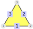
gap> IsPolygonalComplex(twoDisjointTriangles); true gap> DistanceOfVertices(twoDisjointTriangles,3,4); -1
‣ NeighbourVerticesOfVertex( polygonalComplex, vertex ) | ( operation ) |
‣ NeighbourVerticesOfVertexNC( polygonalComplex, vertex ) | ( operation ) |
Returns: a list of positive integers
Given a polygonal complex polygonalComplex and a vertex, this method returns a list of all vertices of polygonalComplex, which are connected to vertex by an edge, i.e. all neighbour-vertices of vertex.
The NC-Version does not check whether vertex is a vertex of polygonalComplex.
gap> cube := Cube();; gap> NeighbourVerticesOfVertex(cube,3); [ 2, 4, 7 ] gap> NeighbourVerticesOfVertex(cube,8); [ 4, 7, 5 ] gap> NeighbourVerticesOfVertex(cube,9); Error, NeighbourVerticesOfVertex: Given vertex 9 does not lie in the given complex.
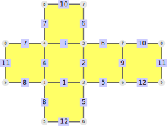
gap> tet:=Tetrahedron();; gap> NeighbourVerticesOfVertex(tet,1); [ 2, 3, 4 ]
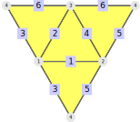
Analogously to section 11.1, the distance-concept for faces will be treated.
‣ DistanceOfFaces( polygonalComplex, face1, face2 ) | ( operation ) |
‣ DistanceOfFacesNC( polygonalComplex, face1, face2 ) | ( operation ) |
Returns: a non-negative integer, or -1.
This method computes the distance of two faces in a polygonal complex (2.1), by determining the length of a minimal face-edge-path (8.3) between the given two faces (the length is the number of edges). If there does not exist any face-edge-path between face1 and face2, which means that the faces are located in different connected components of polygonalComplex, -1 will be returned. If face1 and face2 are identical, their distance is defined as 0.
The NC-Version does not check whether face1 and face2 are faces of polygonalComplex.
gap> cube := Cube();; gap> DistanceOfFaces(cube,1,6); 2 gap> DistanceOfFaces(cube,1,5); 1 gap> DistanceOfFaces(cube,1,1); 0
gap> twoDisjointTriangles := SimplicialSurfaceByDownwardIncidence([[1,2], > [2,3],[1,3],[4,5],[5,6],[4,6]],[[1,2,3],[4,5,6]]);; gap> DistanceOfFaces(twoDisjointTriangles,1,3); Error, DistanceOfFaces: Given face 3 does not lie in the given complex. gap> DistanceOfFaces(twoDisjointTriangles,1,2); -1
‣ NeighbourFacesOfFace( polygonalComplex, face ) | ( operation ) |
‣ NeighbourFacesOfFaceNC( polygonalComplex, face ) | ( operation ) |
Returns: a list of positive integers
This method computes the list of all faces of polygonalComplex, which share an edge with face.
The NC-Version does not check whether face is a face of polygonalComplex.
gap> cube := Cube();; gap> NeighbourFacesOfFace(cube,7); Error, NeighbourFacesOfFace: Given face 7 does not lie in the given complex. gap> NeighbourFacesOfFace(cube,4); [ 1, 5, 2, 6 ]
gap> tet:=Tetrahedron();; gap> NeighbourFacesOfFace(tet,1); [ 2, 4, 3 ]
gap> triangle := SimplicialSurfaceByDownwardIncidence([[1,2], > [2,3],[1,3]],[[1,2,3]]);; gap> NeighbourFacesOfFace(triangle,2); Error, NeighbourFacesOfFace: Given face 2 does not lie in the given complex. gap> NeighbourFacesOfFace(triangle,1); [ ]
This section introduces methods to restrict polygonal complexes to sub-complexes. It contains the following methods:
RestrictionToNeighbourhoodOfFaces (11.3-1): Given a polygonal complex, a distance, and some faces of the polygonal complex, compute a new polygonal complex, where every face has distance at most given dist to one of the given faces
RestrictionToNeighbourhoodOfVertices (11.3-2): Given a polygonal complex, a distance, and some vertices of the polygonal complex, compute a new polygonal complex, where every vertex has distance at most given dist to one of the given vertices.
‣ RestrictionToNeighbourhoodOfFaces( polygonalComplex, dist, listOfFaces ) | ( operation ) |
‣ RestrictionToNeighbourhoodOfFacesNC( polygonalComplex, dist, listOfFaces ) | ( operation ) |
Returns: a polygonal complex
Given a polygonal complex and a list of faces listOfFaces, this method restricts polygonalComplex to a neighbourhood of these faces, defined by dist. It is constructed from all faces, that have distance at most dist to one of the faces in listOfFaces. The distance of two faces is measured by the length of a minimal face-edge-path between these faces.
The NC-Version does not check whether the given faces lie in the polygonal complex.
gap> cube := Cube();;
gap> CubeRestriction := RestrictionToNeighbourhoodOfFaces( cube, 2, [1,2,3]);; gap> CubeRestriction = cube; true gap> RestrictionToNeighbourhoodOfFaces( cube, 2, [3,7,22]); Error, RestrictionToNeighbourhoodOfFaces: Given face 7 does not lie in the given complex. gap> restrSurf := RestrictionToNeighbourhoodOfFaces(cube,1,[1]);; gap> Faces(restrSurf); [ 1 .. 5 ] gap> Edges(restrSurf); [ 1, 2, 3, 4, 5, 6, 7, 8, 9, 10, 11, 12 ] gap> Vertices(restrSurf); [ 1, 2, 3, 4, 5, 6, 7, 8 ]
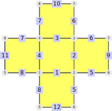
It is easy to see that restrSurf is a cube, where one face (face 6) is missing.
gap> ico := Icosahedron();;
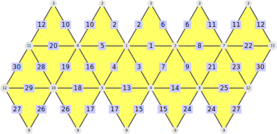
gap> restrIco := RestrictionToNeighbourhoodOfFaces(ico,1,[4]);; gap> IsSimplicialSurface(restrIco); true gap> Faces(restrIco); [ 3, 4, 5, 9 ] gap> restrIcoBig := RestrictionToNeighbourhoodOfFaces(ico,2,[4]);; gap> Faces(restrIcoBig); [ 1, 2, 3, 4, 5, 8, 9, 10, 13, 14 ]
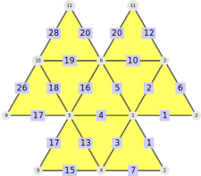
‣ RestrictionToNeighbourhoodOfVertices( triangularComplex, dist, listOfVertices ) | ( operation ) |
‣ RestrictionToNeighbourhoodOfVerticesNC( triangularComplex, dist, listOfVertices ) | ( operation ) |
Returns: a triangular complex
This method restricts a triangular complex 9.3-2 to a sub-complex. This sub-complex consists of:
all vertices that have distance at most dist to one of the given vertices in listOfVertices, where distance is measured as in DistanceOfVertices (11.1).
all edges that connect two included vertices, and
all faces whose incident edges and vertices are included.
The NC-Version does not check whether listOfVertices is a list of vertices of triangularComplex.
gap> octa := Octahedron();;
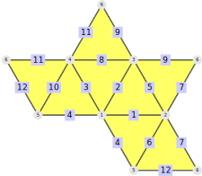
gap> restrOcta:=RestrictionToNeighbourhoodOfVertices(octa,1,[1]);; gap> IsSimplicialSurface(restrOcta); true gap> Faces(restrOcta); [ 1, 3, 5, 7 ] gap> Edges(restrOcta); [ 1, 2, 3, 4, 5, 6, 8, 10 ] gap> Vertices(restrOcta); [ 1, 2, 3, 4, 5 ]
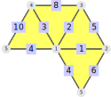
gap> ico := Icosahedron();;
gap> restrIcoOne := RestrictionToNeighbourhoodOfVerticesNC(ico,1,[4]);; gap> IsSimplicialSurface(restrIcoOne); true gap> Faces(restrIcoOne); [ 2, 3, 7, 8, 12 ]
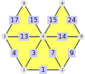
gap> restrIcoTwo := RestrictionToNeighbourhoodOfVertices(ico,2,[4]);; gap> IsSimplicialSurface(restrIcoTwo); true gap> Faces(restrIcoTwo); [ 1, 2, 3, 4, 5, 6, 7, 8, 9, 11, 12, 13, 16, 17, 18 ]
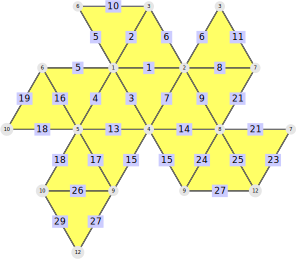
gap> tet := Tetrahedron();; gap> tet=RestrictionToNeighbourhoodOfVerticesNC(tet,1,[1]); true
The method RestrictionToNeighbourhoodOfVertices is only defined for triangular complexes. The reason can be seen easily when looking at a small example: Consider a square.
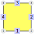
gap> mySquare := PolygonalSurfaceByDownwardIncidenceNC([[1,2],[2,3],[3,4],[4,1]], > [[1,2,3,4]]);;
When restricting the square to a neighbourhood of the vertex 1 with maximal distance 1, the vertices 2 and 4 need to lie in the polygonal complex. Unfortunately, vertex 3 does not lie in the restriction, so face 1 can not be part of the restriction and so the vertices 2 and 4 are not incident to any face in the restricted polygonal complex, which is not possible.
This section contains some application for the method DistanceOfVertices (11.1-1) on polygonal complexes. In the examples the following polygonal complexes are used:
gap> bat:=SimplicialSurfaceByDownwardIncidence([[1,2],[1,3],[2,3],[2,4],[3,4], > [3,5],[4,5],[5,6],[4,6],[4,7],[6,7],[6,8],[7,8]],[[1,2,3],[3,4,5],[5,6,7], > [7,8,9],[9,10,11],[11,12,13]]);; gap> twoDisjointTriangles := SimplicialSurfaceByDownwardIncidence([[1,2], > [2,3],[1,3],[4,5],[5,6],[4,6]],[[1,2,3],[4,5,6]]);;
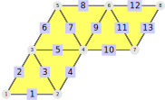
‣ EccentricityOfVertex( polygonalComplex, vertex ) | ( operation ) |
‣ EccentricityOfVertexNC( polygonalComplex, vertex ) | ( operation ) |
Returns: a non-negative integer or -1
This method computes the eccentricity of a vertex in a polygonal complex. The eccentricity of a vertex is the maximal distance vertex has to any other vertex in the polygonal complex. If some vertices have infinite distance to each other, then the eccentricity is defined as -1.
The NC-Version does not check whether the given vertex lies in the polygonal complex.
gap> bat:=SimplicialSurfaceByDownwardIncidence([[1,2],[1,3],[2,3],[2,4],[3,4], > [3,5],[4,5],[5,6],[4,6],[4,7],[6,7],[6,8],[7,8]],[[1,2,3],[3,4,5],[5,6,7], > [7,8,9],[9,10,11],[11,12,13]]);; gap> EccentricityOfVertex(bat,3); 3 gap> EccentricityOfVertex(bat,9); Error, EccentricityOfVertex: Given vertex 9 does not lie in the given complex. gap> twoDisjointTriangles := SimplicialSurfaceByDownwardIncidence([[1,2], > [2,3],[1,3],[4,5],[5,6],[4,6]],[[1,2,3],[4,5,6]]);; gap> EccentricityOfVertex(twoDisjointTriangles,1); -1
‣ DiameterOfPolygonalComplex( polygonalComplex ) | ( attribute ) |
Returns: a non-negative integer or -1
This method computes the diameter of a polygonal complex. The diameter of a polygonal complex is the maximal distance of any two vertices in the polygonal complex. If some vertices have infinite distance to each other (that is when the eccentricity (compare 11.4-1) of one vertex is -1, then the diameter is defined as -1, too.
gap> Bat:=SimplicialSurfaceByDownwardIncidence([[1,2],[1,3],[2,3],[2,4],[3,4], > [3,5],[4,5],[5,6],[4,6],[4,7],[6,7],[6,8],[7,8]],[[1,2,3],[3,4,5],[5,6,7], > [7,8,9],[9,10,11],[11,12,13]]);; gap> DiameterOfPolygonalComplex(Bat); 4 gap> TwoDisjointTriangles := SimplicialSurfaceByDownwardIncidence([[1,2], > [2,3],[1,3],[4,5],[5,6],[4,6]],[[1,2,3],[4,5,6]]);; gap> DiameterOfPolygonalComplex(TwoDisjointTriangles); -1
‣ RadiusOfPolygonalComplex( polygonalComplex ) | ( attribute ) |
Returns: a non-negative integer or -1
The method computes the radius of a polygonal complex. The radius is the minimal eccentricity (compare 11.4-1) of all vertices in the polygonal complex. If some vertices have infinite distance to each other (that is when the eccentricity of one vertex is -1), then the radius is defined as -1, too.
gap> Bat:=SimplicialSurfaceByDownwardIncidence([[1,2],[1,3],[2,3],[2,4],[3,4], > [3,5],[4,5],[5,6],[4,6],[4,7],[6,7],[6,8],[7,8]],[[1,2,3],[3,4,5],[5,6,7], > [7,8,9],[9,10,11],[11,12,13]]);; gap> RadiusOfPolygonalComplex(Bat); 2 gap> TwoDisjointTriangles := SimplicialSurfaceByDownwardIncidence([[1,2], > [2,3],[1,3],[4,5],[5,6],[4,6]],[[1,2,3],[4,5,6]]);; gap> RadiusOfPolygonalComplex(TwoDisjointTriangles); -1
‣ CenterOfPolygonalComplex( polygonalComplex ) | ( attribute ) |
Returns: a set of positive integers or the empty set
This method computes the center of a polygonal complex. The center of a polygonal complex is the set of all vertices of polygonalComplex, whose eccentricity (compare 11.4-1) is equal to the radius (compare 11.4-3) of polygonalComplex. If some vertices have infinite distance to each other, then the center is defined as the empty set [ ].
gap> Bat:=SimplicialSurfaceByDownwardIncidence([[1,2],[1,3],[2,3],[2,4],[3,4], > [3,5],[4,5],[5,6],[4,6],[4,7],[6,7],[6,8],[7,8]],[[1,2,3],[3,4,5],[5,6,7], > [7,8,9],[9,10,11],[11,12,13]]);; gap> CenterOfPolygonalComplex(Bat); [ 4, 5 ] gap> TwoDisjointTriangles := SimplicialSurfaceByDownwardIncidence([[1,2], > [2,3],[1,3],[4,5],[5,6],[4,6]],[[1,2,3],[4,5,6]]);; gap> CenterOfPolygonalComplex(TwoDisjointTriangles); [ ]
generated by GAPDoc2HTML